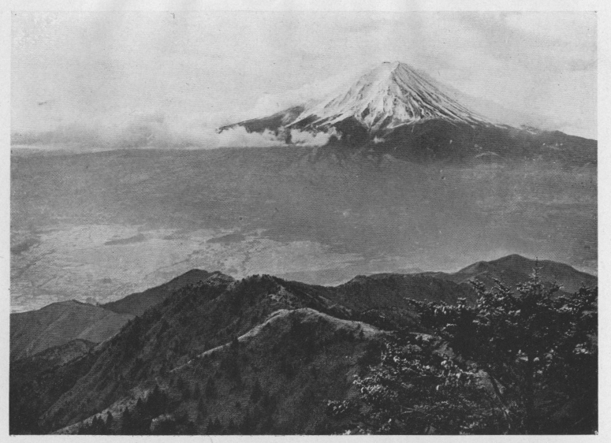

南アルプスの二、三の山が東京から望まれることが確実となったので、外にも
尚お、遠い大井川奥の空から煤煙の都東京をこっそり覗いている山が或は有るかも知れない。
夫を探し出すには東から眺めた山々の姿を
眤と瞳の底に烙き付けて置く必要がある。この見地から農商務省出版の甲府図幅を拡げ、展望台として恰好と思われる山を物色して二つを選み出した、一は河口湖の東北に在る
毛無山で、他は本栖湖の南に在る
天子山脈の最高峰毛無山である。
孰れも同名の山なので、互に区別する為に私等は東西を冠して呼ぶことにしていた。東毛無には既に同好の小倉君が登られて、
無礙の眺望を
恣にしたことを伝え聞いて居る。西毛無には未だ登った人が無いらしい。しかも東毛無よりは近く高いだけに、
其展望は一層優れたものがあろうと想像して、裾野の春を賞しがてら、富士の麓を西から北に廻り、途中西毛無山に登って、夏には見られぬ多量の残雪に輝く南アルプスの大観に飽き、
次手に岳北の四湖を眺め、青木ヶ原の一端をものぞいて見ようというので、四月八日の午後十一時に
田部君と共に東京駅を出発した。四方に美しく発達した裾野の中でも、特に西側の景色が雄大であり変化にも富み、そこは
又曾て最も壮烈な史的悲劇の行われた舞台でもあるから、其遺蹟を訪ねることは、一段と旅の興も加わることと思ったので、
此方面から入ることにしたのであった。
富士駅で身延線に乗換え、翌日の午前五時少し過ぎに大宮町に着いた。先発の松本君に迎えられて、先ず浅間神社に参詣する。夏ならば賑かであろうが、今は広い境内に人影も無い。鳥居をくぐると染井吉野や枝垂桜の交った一町余りの桜並木が八分の開花を見せて、
稍紅の濃い
葩からは、宵に降った雨の名残の雫がはらはらと滴っている。石の
瑞牆を廻らした随身門の内にも桜が多い。それが濃緑の大きな杉森を背景として、くっきりと白く浮き出している、華やかで神々しい。普通とは少し構造を異にした社殿の朱の欄干も物さびて、懐しく心を惹く。御手洗は瑞牆の外で東の方に在る。清い水が
滾々と湧き出して大きな池を湛え、溢れて神田川となり、末は潤川に注いでいる。水面からは霧が白く立ち昇って、掩いかかる常緑の闊葉樹の間に消えて行く、そこからは
頻に鳴く鶯の声が洩れ聞えた。
少憩して用意の朝食を済し、社の前から二町
許西へ行って、甲府に通ずる広い道を北に向って進んだ。昔武田信玄が海道筋へ出兵する時に、
屡軍押しをした道であろう。重く垂れていた雲は次第に雲切れがして青空が
顕れ、五、六寸も伸びた麦畑の上では
雲雀が
長閑に囀り、路傍には
菫、
蒲公英、
草木瓜、などが咲いて、春は地上に遍かった。雑木林では、ほぐれかけた木の芽がほのかに烟り、梢からは
頬白の囀りが絶間なく聞えて来る。北山村で道連れになつた静岡あたりの行商人は、それを「てっぺん五粒、二朱まけた」と鳴くのだと教えた。私の故郷では「てっぺん一六、二朱まけた」と鳴くことになっている。賭博が
盛に行われた土地であることを、頬白の鳴声が知らせているのも面白い。三俣や茶などもお国柄だけあって諸所に植えてある、茶には冬季の寒さが強すぎたかして、上葉が大分枯れていた。
昨夜の雨は裾野の高みでは雪であったらしく、茅戸には新らしい雪が斑に消え残っていた。曇っている東の方に引きかえて、
霽れた西の空には、真黒に針葉樹を鎧うた七面山の尨大な山容が望まれ、行手には天子山脈の天子ヶ岳が尖った頂上を徂来する雲の間から
露わして、東南に曳いた茅戸の長い尾根の低い所まで雪が白い。其の奥の方で少し右に寄った所は、峰頭を乱雲に包まれて、中腹以上の山肌を白く見せている此山脈の最高峰毛無山である。此山は海抜六千四百尺を少し超えているに過ぎないが、其頂上は赤石山系即ち南アルプスの山々を展望するに最も適した場所であると思われるから、これに登って純白に輝く雪山の壮観を
飽まで恣にしたというのが、此旅行の主なる目的であったのである。
宮原、外神、北山などの村々を過ぎて、大宮から二里も来るとやがて中井出に達した。此のあたりもまだ田や畑が拓け、人家も点在して、杉木立なども繁り、裾野の中であっても、それらしい感じは起らない。明日は旧三月節句に当るので、路傍のどの家でも草餅を
搗いていた。若い娘や子供などが田舎風に着飾って歩いているのも、土地に調和した長閑さであった。
上原の部落から本道を離れて六、七町西に行くと駒止桜がある、下馬桜とも称しているらしい。そこは白糸村の内で狩宿と呼ばれ、建久四年五月に源頼朝が富士の巻狩を行った時に、旅館を構えた遺蹟であると伝えられている。『吾妻鏡』には神野の旅館、『曾我物語』には井出の屋形と書かれてある。狩宿の名から推して其遺蹟に相違あるまいと思われる。此桜は山桜の一種で、花は白色一重の大輪であるという。今は未だ蕾が固い。地上二、三尺の高さから幹が分れて、
恰も数本の樹が叢生して互に抱着したかの観があるが、よく
視るとこれは中が朽ちた為に大幹が四分五裂して、その一つ一つが
可なりの
大さに生長したのである。根元の周りは三丈もあろうか。西北の方の幹と其外二、三の枝が過日の大嵐に吹き倒されて、木振りを損じたのは惜しい。頼朝が此処で馬から下りたというので、其名を得たものであるという、つまり旅館の近いことを証するものであろう。井出伝五郎という人の家が四十間許離れた高みにあって、そこが頼朝の旅館であったといわれ、古記録の類もあろうと傍の人に教えられたが、前途を急ぐので立ち寄らなかった。附近に熊窪ノ瀑というのがあって、左手の崖に懸っているのを見たが、判然した位置は記憶に存していない。二丈ばかりのものであった。
頼朝は井出に十日余り滞在して、最後に七日間の巻狩を行うことになった、其初日に当る五月二十八日の子の刻、曾我十郎祐成同じく五郎時致の兄弟が、かねて父の仇と狙っていた工藤左衛門尉祐経の営を襲うて、首尾よく
之を討取った。子の刻というから翌二十九日の午前というた方が適当であろう。太陽暦でいえば七月五日から六日に当っている。『吾妻鏡』に
拠ると、其日は狩の記事なく、朝小雨が降って昼過ぎから晴れ、夜に入っては「雷雨鼓を撃ち、暗夜に灯を失ひ、殆ど東西に迷ふの間、祐成等の為に多く以て疵を被る」とあるので、其時の騒動と、兄弟が太刀を真額に振りかざして奮闘した様とが想像される。其場所も此附近であったろうと思う。『曾我物語』には、此日に狩が行われて、射手の人々もそれぞれ獲物があった。中にも仁田四郎忠常は頼朝の目前で手負の大猪を仕留め、これぞ今日の功名と大喝采を博したことなどを載せ、明日は頼朝が鎌倉に還るというので、この機を逸してはと兄弟が討入を決行したように書いてある。
桜の木を見物している間に、東の方の雲が散って富士が姿を顕した。振り仰ぐ程に高く見える。正面に大沢の薙を埋めた雪の或部分が凍って、銀板の如くきらきらと輝く。裾の方には昨日降った淡雪が、
鹿子斑に樹木の間の茅戸を飾っていた。狩宿から五、六町離れて、少し北に寄った東の方に黒く茂った杉森がある、森の中に祠があって、曾我八幡と土地の人は教えた。けれどもこれは曾我兄弟の霊を崇め祀ったものに外なるまい。今は上屋もトタン葺に変って、中に電灯が吊してあるのも時勢の
然らしむる所であろう。
祠を辞して本道に出で、六、七町行くと上井出の人家が杜絶えようとする左手の路傍に、
半から折れた樅の大木があって、幕張の樅と呼ばれ、頼朝が幕を張ったものだという。其傍から左に杉並木の間を上って行けば、物見塚という小丘の上へ出られる、頼朝が狩場の働きを見物した場所であると伝えられている。塚へは上らずに尚お一町余り行くと左に白糸瀑へ行く道が岐れる。夫を二町も行くと左手の畑の間に祐経の墓というのがある、丁度物見塚の北麓に当っている。三尺
毎に石柱を建て、方三間の囲の中央に、四尺五寸許の高さに丸く土を盛り上げたもので、墓石もなく他に何もない。更に二町もだらだらと下りて橋を渡り、
新に桜を植えた道を左に行くと、右に白糸瀑左に音止瀑が懸っている。後者の方が幅も高さも大きい。しかし周囲が余り露わで、瀑壺の近くに在る発電所の建物らしいものが甚しく目障りである。白糸瀑は其周囲、殊に向って右手の崖の上や中腹から地下水が幾条となく細い瀑となって落下している様が奇観であり、崖上の木立も
幽邃である。此の瀑の壁は下が脆い砂礫の層で、其上を熔岩で掩うている、それで下層から先に
抉れ落ちて、終には上の熔岩までも崩れるので瀑の後退するのが著しいようである。一体に日光の華厳瀑を小さくした趣がある。
瀑壺に下りて休んだ後、岐れた所まで引き返して北進を続けた。これから人穴までは人家もなく、富士の高根から曳き下して、西の方天子山脈に限られた茫漠たる裾野を辿り行くので、浅間の追分の原や八ヶ岳の井出の原などは、之に較べては物の数ではないほど雄大を極めている。しかし高原としては劣るような気がする。間遠の原という名のあることを麓の部落で知った。前には緩く波打った小丘が目も
遥に横たわり、右に近く小松原を擁し、其上の茅戸をこえて黒木立が続き、高く雲に入る斜面には白雪が
眩い。左は杉の林が断続して、頬白が鳴き鶯が囀っていた。私達は南風に吹かれながら、ふわりふわりと原の上を飛んでいる雲のように足も軽く、
暢やかな気持ちで歩みを続けた。
有名なる人穴は、人穴村の人家から二町程北に離れた小高い所にある。石段を上ると破れた堂のようなものがあって、附近には大願成就など彫り付けた石塔が多い。堂の前から右に石段を下ると、
呀然として人穴の洞窟が口を開いている。灼熱した熔岩流が急に冷却した為に生じたものであるとは地質学者の説である。洞内は
始は高く
且つ広く、入口から四、五間の処に御内院開闢と書いた小祠がある、其右側を辿って二十間も進むと、左に一曲して間もなく急に狭くなり、身を細めても通れるか如何か疑わしい。特に此日は連日の雨で、洞底に溜り水が多く、深い所は股を浸す程である上に、骨に徹する冷さなので、其処まで行って
確める勇気は出なかった。昔は余程深く入り込めたものと思われる。『吾妻鏡』に拠ると、建仁三年六月三日即ち太陽暦の七月十九日に将軍頼家は富士の狩倉に来て、仁田四郎忠常に命じ、人穴の奥を見究めさせた。同じ月の一日に伊豆の狩倉でも、和田平太胤長に伊東ヶ崎の洞窟を探らせ、胤長は大蛇を退治して出て来たということである。洞窟探検に余程興味を持っていた将軍らしい。忠常は五人の郎等と共に窟内に入り、翌四日の午後十時頃に漸く帰参した、二十時間以上を費している。
此の洞狭くして踵を廻す能はず、意はずして進行す、又暗くして心神を痛ましむ。主従各松明を取る、路次の始、中、終とも水流足を浸し、蝙蝠顔を遮り飛ぶこと幾十万なるを知らず。其先途は大河也、逆浪漲り流れ、渡らんと欲するも拠を失ひ、只迷惑の外他なし。爰に火の光に当りて、河向に奇特を見るの間、郎従四人忽ち死亡す。而して忠常は彼霊の訓に依り、恩賜の御劒を件の河に投げ入れ、命を全うして帰参す云々。古老云ふ、是浅間大菩薩の御在所なり、往昔より以降、敢て其所を見るを得ず云々。今の次第尤も恐る可き乎云々。
とは『吾妻鏡』の文である。恐らく窟内の模様は其当時と変ったところもあろう。
人穴の附近は、
椈、
楢、檜などの大木があるが、其北は
広袤数里に
亘って、小灌木の外には殆ど目を遮る大木もなく、北には根原、西北には麓、西南には猪之頭、南には人穴と、遠く半円形に人家が点在している。甲州方面の青木ヶ原は、大小の熔岩がごろごろしているに
拘わらず、主として
栂や
樅などの大森林が昼尚お暗く繁って、其中で道に迷うと容易に出られない。ここは殆ど岩を見ないで、しかも四方明け放しの草原であるのは、好い対照である。
明日は毛無山に登る予定なので、人穴から左に原を横切り、麓の部落をさして進んだ。岐路が多いので、三人思い思いの道を別れ別れに歩いたりした。間もなく朝霧の原にかかった頃から南の風が強く吹き出して、雲は低く山を掩い、今にも降り出しそうな暗憺たる光景を呈するに至ったが、雲雀は長閑に囀っていた。このあたりは全くの草原である。暫くして水なき河原を横切り、午後四時頃麓の部落に着いた。泊りのことが心配だったので、初は根原に行く筈であったが、山からは少し遠くなる、それで麓にきめた。しかし来て見れば案じた程のこともなく、教えられるままに竹川忠義という人の家を尋ねて一泊を頼むと、喜んで承諾してくれた。外見よりも内部は立派な構えであったが、私達は別に東の方に建てられた新らしい離家に案内されて、暢び暢びと一夜を過したのみならず、道すがら羨望して止まなかった草餅までも馳走されたのは、こよなき仕合せであった。南に面した座敷からは、一目に裾野が見渡された。村では水が極めて潤沢に流れている。それが村を離れると直ぐ地下水となって、一里余り南の猪之頭で再び湧出する。村の北にある十丈近い大瀑も、落ちると間もなく地下に浸透しているのには驚いた。猪之頭はつまり井の頭で、井出と同様に水の湧き出していることを示す地名である。近年猪之頭を中心として、水の公園が造られたとの話を聞いた。
炉端で草餅を摘みながら主人に山のことを
質した。土地では毛無山の名を知らない、
大方山と呼んでいる。恐らく毛無という名は測量部の称呼であろうとのことであった。此山は相模野の基線から出発した一等三角点で、其建設は明治十七年であった。尤も其以前に那須野の基線からする内務省の一等三角点として用いられていたので、其当時は南面が茅戸であった為に、
三峠の毛無山と同様に、便宜上毛無と呼ばれたものと思われる。其後木は生長して、私達の登った頃は盛に炭焼が行われていた。
明くる十日は快晴であった。午前八時に出発して、十二時に大方山の頂上に着いた。村から直に山に懸り、千二百米をひた上りに上るのである。途中藪のひどい所があって割合に時間を費した。登路は二条あって、北に在るものは一九五八米の最高点に達する。私達は南に在る三角点への路を取ることにした。鎮守の鳥居を潜り抜け、左に用水堀に沿うて水なき沢を過ぎ、右の小径を辿り、二百米も上ると右手に六、七丈の瀑が二段となって落下している。ここで路は三つ四つに分れ、
孰れも荒廃しているので選択に迷った。田部君は沢について上って行った。此の方が楽で、松本君と私とは、雑木に交って木苺、バラ、棒ダラなど、刺のある灌木の叢生している中を、苦しみながら押し分け登って、漸く大きな露岩の上に出ると、田部君は既に腰を下して私等の来るのを待っていた。これからは路も明瞭である。十時頃大きな崖の縁に出た。来し方を顧ると、枝という枝を霧氷に飾られた大小二本の樅の間から、雲表に聳ゆる富士が笑ましげに
孱顔を顕し、
宛然一幅の画であった。
登るに従って霧氷は
益美しく、残雪は多くなり、頂上では二尺以上の深さであった。堅く凍っているので落ち込む憂はない。視界は木立に遮られて思ったより狭く、殊に西側は栂の密林が続いている。少しの展望を得ようとするにも、あちこちと歩き廻らなければならなかった。生憎にも西の空は曇っていたから、南アルプスの群嶺は半腹以上を厚い雲に包まれ、其下から長大な雪渓が幾十条となく走り出しているのを見た許りで、終に期待した眺望を得られなかったのは実に残念であった。しかし霧氷の美しさは何と形容してよいか、水晶林というのが若しあれば似ているかも知れない。木という木は残らず七、八分の長さに生長した霧氷を附着させている、南側は特によく発達していた。前日から南の風が頻りに雲霧を送って、山上の樹木が白粉を装ったように白くなるのを原から認めた、夫がこの霧氷であった。細い枝などは全く花に咲き埋められたように重く垂れていた。私達は幾度足を停めて嘆賞したことであったろう。
南アルプスは望めなかったが、北から東の方にかけて
御坂秩父の連山、南は駿河湾まで一目に見られた。青木ヶ原の大森林も眼下に黒く展開している。其北の端に当って四つの鏡を置き並べたように本栖、精進、西、河口の諸湖が、春の日をうけて長閑に光っているのであろうと思ったりした。
大方山の頂上から尾根伝いに雨ヶ岳までは、雪の上が歩けた。長い笹の繁っている処では、雪が浅くて落ち込むこともあったが、概して歩行は楽であった。夏は困難するであろう。雨ヶ岳からは直接に川尻へ下ろうと試みた。けれども急傾斜の上に雪が氷って滑るので中止し、途中から横を
搦み、竜ヶ岳へ続く尾根に出た。千五百米以下は霧氷も雪も絶えて笹が深くなる。それを分けて根原から登る
端足峠の道に出で、北に向って本栖湖畔に下りた。路は湖の南岸に通じている。数百羽の小鴨が木の葉のように水面に浮んでいたのは珍らしかった。水は清く色は深碧で、富士北麓の五湖の中では最も幽邃である。しかし日光の湯の湖には及ばない。本栖村から日が暮れ、精進湖畔では、パノラマ台への道を上って行く田部君を呼び返そうとして、大声に喚き立てた。精進ホテルの犬が盛に吠え出したので、ホテルの戸が開いて、美しい妙齢の星野嬢が若いボーイを連れて出て来た。訳を話すと早速ボートを下して精進の村まで送ってくれた。松本君に宿のことを頼み、引返して竹法螺を吹いて貰うと、田部君も下りて来たので、又船で送られた。「慣れない人はよく迷いますよ」と言われた嬢の言葉に全く恐縮して、
一向に好意を謝するのみであった。午後九時頃であったろう。

●三峠山頂の富士山
翌十一日は空模様が怪しかったので、東毛無山（三峠山の南肩）の登山を止め、湖水を見物しながら船津まで来て、鉄道馬車にて大月に出で、其日の中に帰京した。
精進湖は南岸に堆積した
磊珂たる熔岩塊が興味を惹くだけで、周囲の赤松林は一向に有難くなく、水の色も草色に近い。これは西湖も同様である。尤も精進から根場に至る間の青木ヶ原の一部は、初めての人には珍らしいであろう。それも鳴沢から大室山の南を通って人穴に至る道を知っている人には物足らないものである。本栖湖の外は周囲が余り拓けているので、山中の湖水という感じに乏しい。
唯晴れた日に
是等の湖水の北岸を通ると、絶えず秀麗なる富士の姿を頭上に仰ぎ、其倒影を湖心に眺めるのが他に見られぬ特色である。富士なくしては
確に湖水の価値を牛ぱ以上も失わしめるであろうと思われる。（大正九年四月）
（昭和一〇、八『登山とはいきんぐ』）